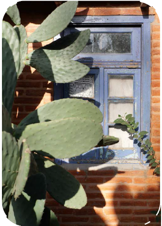
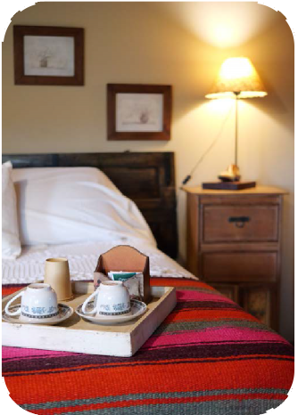
Hostería
ARUMA
Suipacha, Buenos Aires | 2024
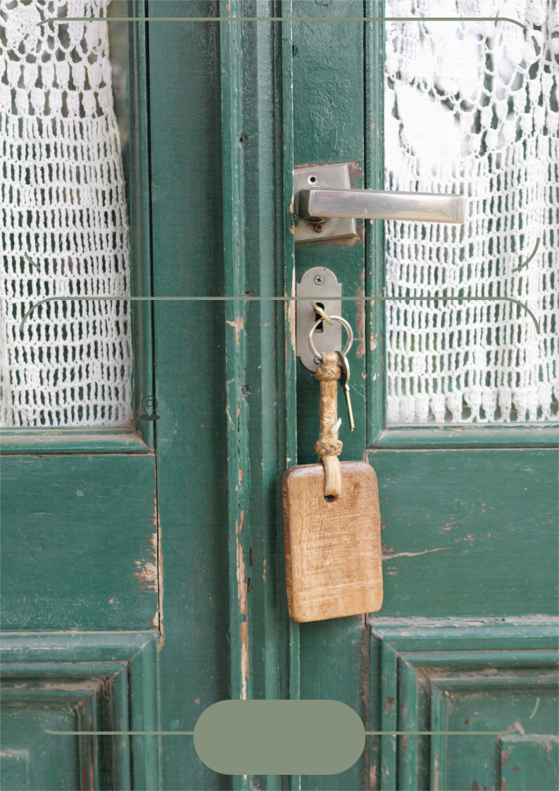
¡Bienvenidos!
¡Qué lindo recibirlos en nuestra hostería!
Tenemos todo listo para que tengan una hermosa estadía.
Por favor, tómense un minuto para revisar información importante.
Cómo llegar
Hostería Aruma está ubicada sobre la Ruta Nacional 5, km 124,
a 1km la entrada de Suipacha,
de mano derecha de quien viene de CABA.
Algunas empresas de transporte realizan viajes regulares en vans, desde distintos puntos de CABA.
Son la principal opción para venir sin auto:
Buses Chivilcoy: +54 011 15 5409 1006
Santorini Turismo: +54 02346 433166
Hostería
Aruma
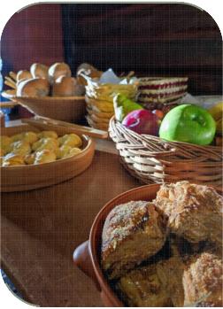
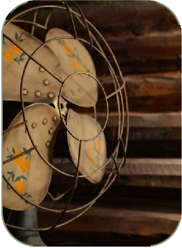
Información General
El horario de check-in
es de 13h a 21h.
El check-out debe realizarse hasta las 11h de su último día. Consultar por check-out tardío (hasta las 19h).
El desayuno se sirve de 8h30 a 11h.
El agua de las canillas es apta para consumo.
Red: Aruma WiFi
Contraseña: hosteria.
Hostería
Aruma
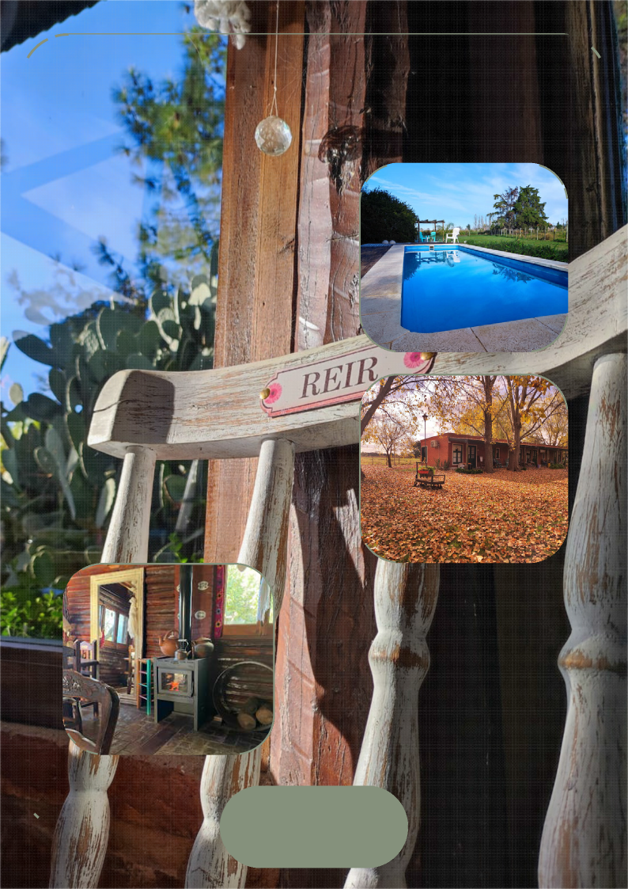
Áreas Comunes
Contamos con un predio de una hectárea, que ofrece un ambiente de tranquilidad y relajación ideal para quienes buscan escapar de la agitación urbana, ya sea refrescándose en la pileta, compartiendo un buen vino cerca de la fogata o simplemente disfrutando del aire puro y el canto de los pájaros.
El salón de uso común es ideal para pasar el rato cerca de la salamandra, charlar con amigos, entretenerse con un juego de mesa o leer un buen libro.
Hostería
Aruma


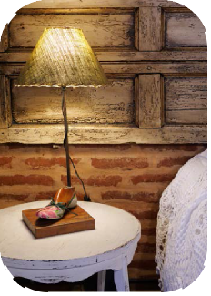
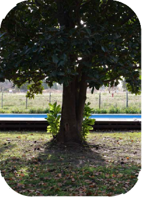
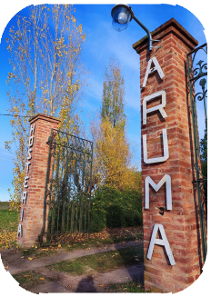


Normas de la casa
Lamentablemente, no podemos recibir mascotas.
Las toallas se cambian cada dos días
y no se deben llevar al sector de la pileta.
Respetemos el silencio y la tranquilidad de todos.
Se ruega apagar aires acondicionados y luces al salir.
Certificarse de apagar el fuego luego de usar los fogones.
Hostería
Aruma
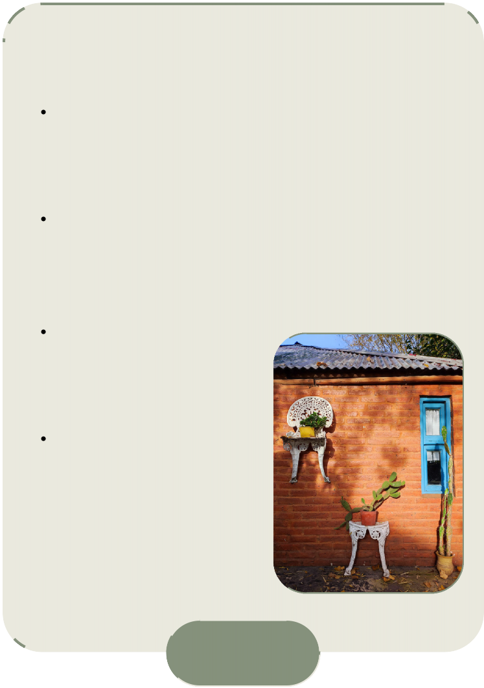
Información Adicional
Somos una hostería familiar y, aunque vivimos en el predio, no siempre estamos en recepción.
Si necesitan algo y no nos encuentran, pueden tocar timbre, llamar o mandar whapp.
El portón de la hostería se cierra por la noche, para la tranquilidad de todos. Se les brindará
la combinación del candado para que puedan entrar y salir libremente.
Contamos con algunas
Si tienen sed, ¡alcen la mano!
Hostería
Aruma
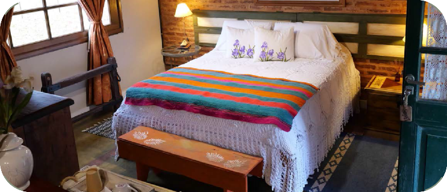
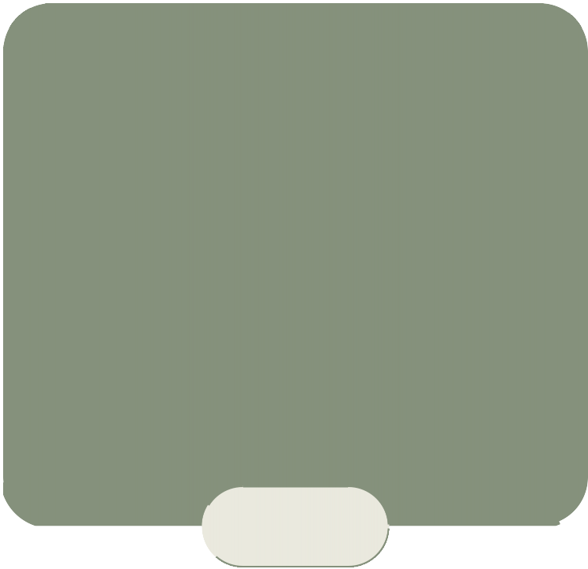
Turismo en Suipacha
Las visitas guiadas de la Ruta del Queso
son imperdibles y requieren reserva previa.
Piedras Blancas: +54 011 15 6501 5555 https://tienda.piedrasblancas.com.ar/
Fermier: +54 02324 556396
Tour producción de arándanos:
Il Mirtilo: +54 011 5120 4564
https://www.ilmirtilotienda.com.ar/
Hostería
Aruma


Esperamos que tengan una experiencia inolvidable.
CONTACTO :
011 2633 9907
@HosteriaAruma
Hostería
Aruma